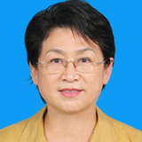

首页
研究中心
基金会
综合信息
漆器典藏
漆器资料
虚拟展厅
首批专家名录
李（高树）经泽
李（高树）经泽，日籍华人，日本东方漆艺研究所原所长，著名文物收藏家，其父李汝宽先生是著名的漆器研究专家。李经泽先生研究漆器40余年，对世界各地的漆器了如指掌，在《故宮文物月刊》、《上海文博》等发表有《洪武剔红器初探》、《洪武剔红器再探》、《略談明漆器宣德款真伪》、《果园厂小考》等多篇文章。有感于目前关于漆器的论文、书籍良莠不齐，李先生把自己一生走访世界各大漆器收藏机构和收藏家所看到的剔黑漆器，集自己的研究考证，撰写了《漆缘觀彙録（剔黑篇）》一书，以便漆器研究者参考佐证。
夏更起
夏更起，1933年8月生于河北省，国家文物鉴定委员会委员、故宫博物院著名漆器专家、中国文物学会漆器珐琅器专业委员会学术顾问。夏更起先生至1972年在故宫博物院工作，就浸于其中，潜心研究，主攻漆器、珐琅器、玻璃器等类文物的研究与鉴定，在元明清三代漆器的研究上尤为突出。师从我国已故著名文物鉴定专家朱家溍先生，获益良多，在明代早期漆器的研究和结合宫廷造办处档案研究明清漆器上颇有见解，以学识宽厚在古代漆器研究领域著称。先后在《故宫博物院院刊》、《紫禁城》等专业刊物上发表过专业论文和文章10余篇，主要有：《故宫藏日本漆器浅议》、《试谈平凉雕漆》、《故宫博物院藏“洋漆”与“仿洋漆”器探源》、《对故宫博物院藏部分掐丝珐琅器时代问题的探讨》、《清宫鼻烟壶概述之金属胎珐琅鼻烟壶》、《玻璃胎画珐琅考析》、《漫说宣德珐琅器》等。主编《中国漆器全集•明代》（第五卷）、《中国漆器全集•清代》（第六卷）、《故宫博物院藏珍品全集•元明漆器》、《故宫藏鼻烟壶选粹》等多部专著。
西冈康弘
西冈康弘，1941年生于东京，专攻东洋艺术史。原国立博物馆理事（兼东京国立博物馆副馆长），现任松涛博物馆馆长、颍川美术馆评议员、上海博物馆特聘研究员、湖北省博物馆顾问。著有《中国の螺钿》（《中国的螺钿》）、《中国宋时代の雕漆》（《中国宋代的雕漆》）等。
张燕
张燕，笔名长北，1944年7月生，东南大学艺术学院教授。出版专著有：《中国艺术史纲》、《中国手工艺•漆艺》、《中国漆器》（韩文版）、《扬州漆器史》；校勘、译注、解说并研究性独立著作有：《中国古代艺术论著集注与研究》、《中国古代艺术论著研究》、《<髹饰录>图说》等。

陈丽华
陈丽华，女，1953年11月出生，辽宁省大连市人，辽宁大学历史系毕业。1971年参加工作以来，先后供职于大连旅顺博物馆、北京故宫博物院。曾任旅顺博物馆陈列部主任、故宫博物院古器物部副主任、宫廷部主任、故宫博物院副院长，研究馆员，故宫博物院学术委员会委员。中国艺术研究院艺术硕士研究生导师，中国社会科学院研究生院文物与博物馆硕士教育中心兼职教授。 参加工作以来，一直从事文物的陈列与研究鉴定。专业研究方向以工艺美术的漆器、珐琅工艺为主。在《文物》、《故宫博物院院刊》等刊物上发表文章五十余篇；出版《古漆器鉴赏与收藏》、《漆器鉴识》、《文物名家大讲堂——中国工艺.漆器》、《故宫经典－珐琅器》《故宫经典－珐琅器》等专著数部。参加了中宣部的《中国美术全集.漆器分类全集•明代卷》、《中国美术全集.漆器分类全集•清代卷》、《中国美术全集•中国金属胎珐琅器》；故宫博物院的《故宫文物珍品全集.漆器卷》，《故宫文物珍品全集－珐琅卷》；国家文物局的《文物定级图典》等数部大型图书的编撰工作。
包燕丽
包燕丽，女，1984年毕业于上海大学文学院历史系考古与博物馆学专业。同年进入上海博物馆工作至今。现任上海博物馆工艺研究部主任，研究馆员。近年来主要从事中国少数民族工艺、顾绣、漆器等研究。漆器方面的主要论述有：《明代文化·御制漆器和民间漆艺》、《元代剔红器的另一种风格——对“剔红东篱采菊图圆盒”的再认识》、《漆苑精粹——麦克·哈里收藏的中国漆器》（英文版）、《宋代漆器的成就》、《试论清代前期竹刻对雕漆的影响》等。
中心简介
章程制度
中心任务
特聘专家
学术成果
资料库书目